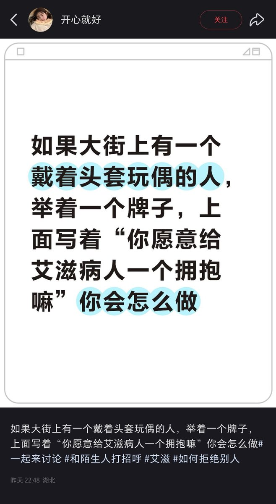
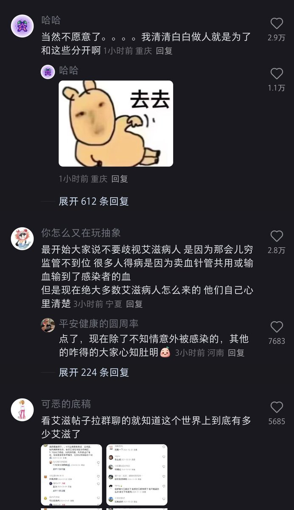
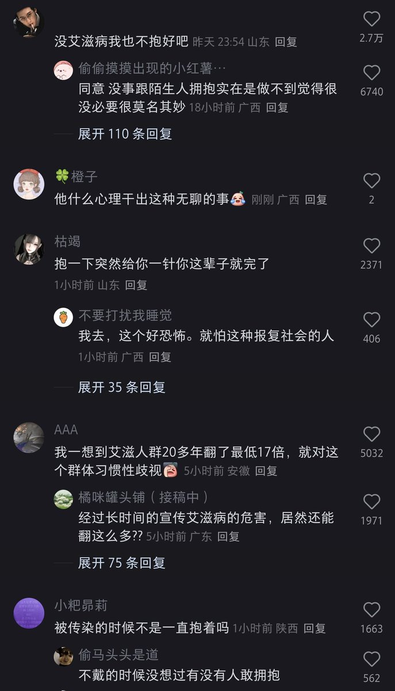
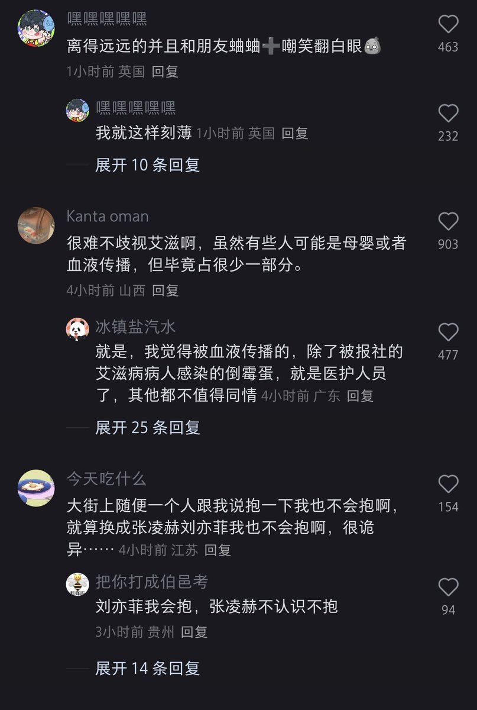

北雁冬翼（simone luxem）🏳️⚧️🏳️🌈🔬
@Simone_Luxem
诶别的搞得我有点想这么搞一出，不过我与其头套更喜欢面具，然后再找一个人在暗处录像，不是录我，而是录我面前路过的人的百态
然后第二天两个人交换，牌子上改成“我没有艾滋病，可你愿意给艾滋病人一个拥抱吗”，然后我再在暗处录其面前经过的人的百态




人造黄油➡️no where
@3C3AHuangYou
这就是简中，永远恶意猜想少数人群，觉得全世界“不正常”的人类个体都是“咎由自取”，觉得自己永远不会成为那个“少数者” https://t.co/aOq5uPBKAn